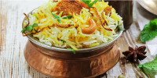
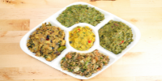

Bangladeshi Resturant
Bangladeshi Resturant
Deshi food is tasty food

BiriyaniBiryani is a mixed rice dish originating among the Muslims of the Indian subcontinent. It is made with Indian spices, rice, and meat usually that of chicken, goat, lamb, prawn, fish, and sometimes, in addition, eggs or vegetables such as potatoes in certain regional varieties Price: 350৳ |
 |
Mutton CurryIngredients. Common ingredients used to prepare mutton curry include: mutton or goat meat, salt, turmeric powder, mustard oil, ginger garlic paste, dahi (yogurt), assortment of spices, onion, Chilli, tomato, and Coriander leaves. Price: 450৳ |

|
ParathaA paratha is a flatbread native to the Indian subcontinent, prevalent throughout the modern-day nations of India, Sri Lanka, Pakistan, Nepal, Bangladesh, Maldives and Myanmar, where wheat is the traditional staple. Paratha is an amalgamation of the words parat and atta, which literally means layers of cooked dough. Price: 50৳ |
VortaBhurta' or bharta is a lightly fried mixture of mashed vegetables (chakata) in the cuisine of India and Bangladesh. Price: 150৳ |
 | |
Fish CurryFish curry is an Indian also Goan dish. It consists of sardines semi-stewed in a Kerala-style curry with assorted vegetables, such as okra or onions. It is usually served with rice, naan, bread, or tapioca. Price: 350৳ |

|
TeaTea is an aromatic beverage prepared by pouring hot or boiling water over cured or fresh leaves of Camellia sinensis, an evergreen shrub native to China and East Asia. After water, it is the most widely consumed drink in the world. Price: 10৳ |